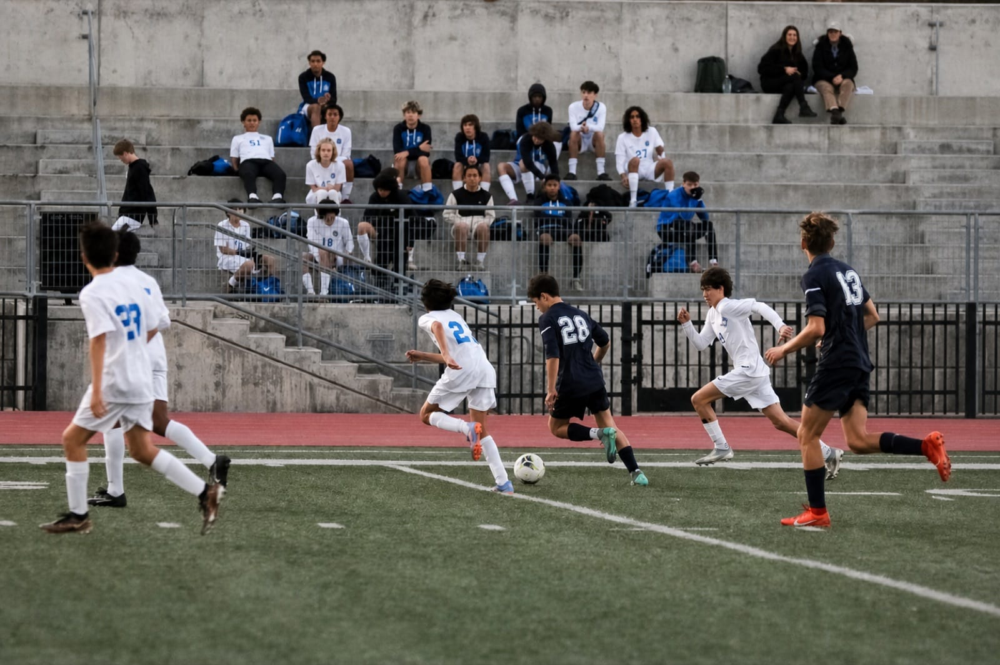

"My dream is to be a professional athlete." This is a sentence that every child who has played sports has probably excitedly exclaimed to their teachers, friends, and parents. My experience was nothing different. During the 2018 World Cup, my father took me to watch it live in Russia. I remember going to the stadium early to watch Sweden play against South Korea. I saw the grass that glinted like emeralds because of the freshly watered pitch and the sun that hit the field. I felt the crowd alive and rumbling when the players performed magic on the stage. Through this experience, my dreams of becoming a professional soccer player began. I practiced countless hours and sacrificed time that I could have spent playing with friends or relaxing. Playing on the crisp grass pitch, amongst tens of thousands of fans cheering me on in stadiums, was an image that was burned into my head and a goal that I promised I would realize.
Soccer was my everything. I would wake up early in the morning, train, eat breakfast, go to school, bike to the field, and train again. This process repeated every day, for every week, for every month, for every year. Even the days I didn't want to wake up, even the days it was raining, even the days that the weather was freezing or scalding hot, I would show up to the pitch and ensure that I held true to the promise I made with that soccer ball. I became obsessed with soccer, and individuals around me could see that. I was identified only by my label as a soccer athlete, someone that was crazy for the sport, and I didn't hate that title at all, only fueling me to continue pursuing my passion even more.
I suffered a lateral meniscus tear in the 8th grade, leading my dream to a screeching halt. I suffered, watching the rest of my friends continue to play the sport I loved, while bedridden, unable to touch a ball for six months. I never understood what a huge mental impact sports could bring. Having an activity you constantly repeated every day, for hours on end, suddenly be stripped away from you is a feeling I never knew could be so painful. You watch on the sidelines, questioning why it had to be you. Why did you have to be injured when others were fine? Why were you the one that drew the short end of the stick when you were one of the most passionate ones? I was always taught by coaches to "toughen up" and that pain was something only felt by losers, whether it be mental or physical. This ideology, I discovered in my recovery, was flawed. Mental health is just as important, if not more important, than your physical health. Luckily, in my journey to recovery, my physical therapist understood this and made sure that I took care of myself mentally well before I started training and getting back into soccer. He served as not only my role model but also as my guiding light, inspiring me to do the same for others.
I still remember those sleepless nights, when nobody was there to comfort me, where my leg was encased in a cast, unable to move, with fresh scars from the surgery. I remember the sting of pity I felt from my peers, and the terrible experience it was to have to walk on crutches to my classes. However, through this experience, I discovered the importance of mental health and I found that even when obstacles become present and you feel like your world is falling apart, life continues. Eventually, the fresh scars fade and leave only a reminder of the adversity you were able to face and get past. I was able to recover, and I was able to come back stronger because of it. Through my injury, I was finally able to take a breath and realize how much I truly loved soccer. Being away from the ball, having to watch from the sidelines really allows you to ponder and reinforces that you truly love the sport you are playing. The injury didn't just make me miss out on the sport, it made the embers of love for soccer only burn brighter.
I understand that many athletes feel like they lost their identity, lost what makes them special, because of an injury that made them unable to play the sport they love. For a long time, I thought soccer was who I was. When people would ask me to describe myself, the only thing that would pop up is "soccer player." However, as I watched from the sidelines, and I took the steps towards recovery, I realized that soccer was a part of who I was, but it never defined who I am. An injury can take you away from your sport, but it can't take away your grit, determination, passion, and diligence. These attributes are part of your identity, and can never be taken away. Now, when I remember the day I was injured, I don't see it as a moment where my journey stopped. I see it as the moment where I began to prioritize myself over the sport I held dear to me.
Support
Resources & Support
If this story resonated with you or reflects challenges you may be experiencing, the following organizations provide support and helpful resources.
Broad Shoulders Initiative is not a crisis service, medical provider, or therapy provider. If support feels urgent, please contact emergency services, a trusted adult, a school counselor, or a licensed professional.